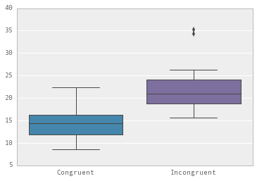
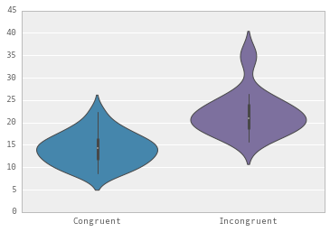
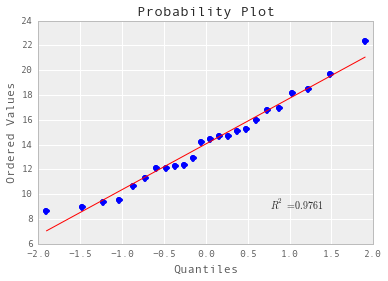
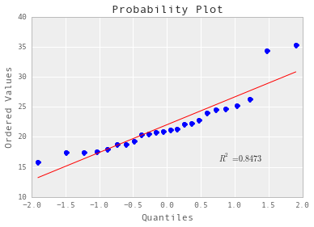

by Duo Wang
In a Stroop task, participants are presented with a list of words, with each word displayed in a color of ink. The participant’s task is to say out loud the color of the ink in which the word is printed. The task has two conditions: a congruent words condition, and an incongruent words condition. In the congruent words condition, the words being displayed are color words whose names match the colors in which they are printed: for example RED, BLUE. In the incongruent words condition, the words displayed are color words whose names do not match the colors in which they are printed: for example PURPLE, ORANGE. In each case, we measure the time it takes to name the ink colors in equally-sized lists. Each participant will go through and record a time from each condition.
In this Stroop task, the independent variable is a True/False variable for the congruent or incongruent condition. The dependent variable is subject's response time to name the ink colors.
H0 : μ1 - μ2 = 0 H1 : μ1 - μ2 ≠ 0 ; where μ1 = the mean time in the congruent words condition μ2 = the mean time in the incongruent words condition
I will porform t-test to examine the difference between the means in each condition. The data set should meet the three assumptions for t-test[1] that 1.the two samples are independently and randomly drawn from the source population. (The task assumption) 2.the scale of measurement for both samples has the properties of an equal interval scale. (The data in each condition should have the same variance, test later) 3.the source population can be reasonably supposed to have a normal distribution.(test later)
[1]the definations and assumptions from «Concepts and Applications of Inferential Statistics» by Richard Lowry
To get descriptive statistics we run Python code
"""
Project 1
Created on Sat Sep 5 18:36:37 2015
@author: Duo Wang
"""
# Reading data locally
import pandas as pd
stroop = pd.read_csv('/Users/Wangduo/stroopdata.csv')
#Report some descriptive statistics
print stroop.describe()
and get results as below
Congruent Incongruent
count 24.000000 24.000000
mean 14.051125 22.015917
std 3.559358 4.797057
min 8.630000 15.687000
25% 11.895250 18.716750
50% 14.356500 21.017500
75% 16.200750 24.051500
max 22.328000 35.255000
The mean in the congruent condition is 8.63 and in the incongruent condition is 15.69, The standard deviations in the congruent condition is 3.55 and in the incongruent condition is 4.79.
To do the visualizations we run
#visualizations (with seaborn style)
import matplotlib.pyplot as plot
import seaborn as sns
# Do the boxplot
plot.show(sns.boxplot(stroop))
# Do the violinplot
plot.show(sns.violinplot(stroop, widths = 0.5))
and get boxplot: 
and "violin" plot: 
From the boxplot we can read the minimum, median, maximum, upper and lower quartile for both conditions, and we can see that the difference between their medians are significant. There seems to be two outliers in Incongruent condition, however I choose not to reject them as bad point since there are only 24 samples and we do not know whether the outliers have any relationshit to the real task.
From the violinplot we can see that the samples seem to have a normal distribution. But the normal assumption for t-test also need to be tested.
First we test the same variance assumption, we run:
from scipy.stats import levene
print levene(stroop.Congruent, stroop.Incongruent)
and get:
(0.2502499448677214, 0.61928406991282192)
the p-value for this test is 0.619 > 0.05. we cannot reject the assumption that their variance are equal, so we assume that the same variance assumption is true.
Then I try to perform the Kolmogorov-Smirnov test for the normal distribution assumption, I run:
from scipy.stats import kstest
print kstest(stroop.Congruent, 'norm')
print kstest(stroop.Incongruent, 'norm')
and get...errors:
(1.0, 0.0)
(1.0, 0.0)
However, when I watch their probability plots:
import pylab
import scipy.stats as stats
stats.probplot(stroop.Congruent, dist="norm", plot=pylab)
pylab.show()
stats.probplot(stroop.Incongruent, dist="norm", plot=pylab)
pylab.show()
 
I can see that except for the outliers, those points on this plot form a nearly linear pattern, which indicates that the normal distribution is a good model for this data set. So I skip KStest and perform the t-test directly.
# Do the t-test
import scipy.stats as ss
print ss.ttest_ind(stroop.Congruent, stroop.Incongruent)
(-6.5322505539032285, 4.5949489622951854e-08)
p-value is 4.6e-8 << 0.05, we can reject H0 that the mean in the congruent words condition is equal to the mean in the Incongruent words condition at the confidence level of 0.05.
We can draw the conclusion that it takes more time to name the ink colors in the incongruent condition than in the congruent condition.
(..I tried several times but still have no idea of what happened in KStest.)
I think the attention theory could provide an explaination for the effects. In an incongruent words condition, subjects can not focus on the word(e.g."red")but have to use more attention to recognize the real color of the word(e.g. blue, if the word "red" is printed in blue).
If the selective attention theory is true, we can observe similar effects on an alternative task. The subjects are shown with an animal figure(e.g. duck) while hearing the name of another animal(e.g. dog, or even the sound made by another animal). And the task is to name the animal shown on the screen. We can measure and compare the response time in both congruent/incongruent animals condition.
I am also interested in the researches regarding the neural mechanisms. Brain imaging techniques have shown that the anterior cingulate cortex and the dorsolateral prefrontal cortex(PFC) are involved in the processing of the Stroop task[2]. So the researchers model the process on different levels: from working memory to the top-down control of PFC. One example : using the recorded fMRI data, S A. Herd[3] address that top-down attention control from PFC play an important role and he use a neural network model to simulate the process. I would like to learn more about those neuron-network methods.
[2]https://en.wikipedia.org/wiki/Stroop_effect
[3]Neural Mechanisms of Cognitive Control: An Integrative Model of Stroop Task Performance and fMRI Data, 2006, Seth A. Herd, Marie T. Banich, Randall C. O’Reilly